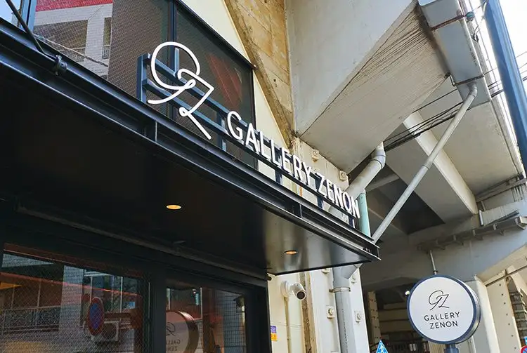

Musashino, Tokyo: things to do, food and stays
Musashino · Tokyo
Musashino
Highlighted on the Tokyo map.

Sights

Dining
Atesuei
アテスウェイ

Sweets and bakery shop in Musashino, Tokyo.
Dans Dix ans
ダンディゾン

Sweets and bakery shop in Musashino, Tokyo.
Ramen Sukoyaka
ラーメン 健やか

Noodle restaurant in Musashino, Tokyo.
Yakitori Yamamoto Reservation
焼鳥 山もと

Meat restaurant in Musashino, Tokyo.
Ozasa
小ざさ

Sweets and bakery shop in Musashino, Tokyo.
chai break
チャイブレイク

Cafe in Musashino, Tokyo.
Uddoberizu Hon
ウッドベリーズ 本店

Sweets and bakery shop in Musashino, Tokyo.
Riberute Pateisuri Buranjieri Tokyo Hon Kichijoji
リベルテ・パティスリー・ブーランジェリー 東京本店・吉祥寺

Cafe in Musashino, Tokyo.
L'EPICURIEN
レピキュリアン

Cafe in Musashino, Tokyo.
Tokyo Miso Ramen Uzura
東京味噌らーめん 鶉

Noodle restaurant in Musashino, Tokyo.
Chinese Sai Yunron
中國菜 雲蓉

Meat restaurant in Musashino, Tokyo.
Mamezou
まめ蔵

Cafe in Musashino, Tokyo.
Rinde Kichijoji Hon
リンデ 吉祥寺本店

Cafe in Musashino, Tokyo.
LITTLE SPICE
カレー食堂 リトルスパイス

Chinese or Asian restaurant in Musashino, Tokyo.
Tombo

Noodle restaurant in Musashino, Tokyo.
Ryumon Coffeestand
リュモンコーヒースタンド

Cafe in Musashino, Tokyo.
COFFEE HALL Kugutsu Kusa
COFFEE HALL くぐつ草

Cafe in Musashino, Tokyo.
Amane
天音

Restaurant in Musashino, Tokyo.
Sato no Yado
里の宿

Seafood restaurant in Musashino, Tokyo.
Wood Berries Marushe
ウッドベリーズ マルシェ

Cafe in Musashino, Tokyo.
a tes souhaits! glace et chocolat
アテスウェイ グラスエショコラ

Sweets and bakery shop in Musashino, Tokyo.
Uchoku
迂直

Noodle restaurant in Musashino, Tokyo.
Chin Chin Tei
珍々亭

Noodle restaurant in Musashino, Tokyo.
SCREWDRIVER
スクリュードライバー

Izakaya or bar in Musashino, Tokyo.
[Relocated]Ramen Dokutsuya
ラーメン 洞くつ家
![[Relocated]Ramen Dokutsuya](/media/tokyo-musashino-tb13010014.webp)
Noodle restaurant in Musashino, Tokyo.
Sabo Musashino Bunko
茶房 武蔵野文庫

Cafe in Musashino, Tokyo.
Menya Sakurai
麺屋 さくら井

Noodle restaurant in Musashino, Tokyo.
pizzeria GG Kichijouji
ピッツェリアGG 吉祥寺

European restaurant in Musashino, Tokyo.
Hikiniku to Kome Kichijouji
挽肉と米 吉祥寺

Meat restaurant in Musashino, Tokyo.
Chuka Tsuke Soba Dekigokoro
中華つけ蕎麦 でき心

Noodle restaurant in Musashino, Tokyo.
Sushi Tomikawa Reservation
鮨 富かわ

Seafood restaurant in Musashino, Tokyo.
Shina Soba Aoba
支那そば あおば

Noodle restaurant in Musashino, Tokyo.
Geinin
鯨人

Noodle restaurant in Musashino, Tokyo.
Kooriya Piisu
氷屋ぴぃす

Restaurant in Musashino, Tokyo.
Sushi to Shuko Tomikawa Reservation
鮨ト酒肴 富かわ

Seafood restaurant in Musashino, Tokyo.
Ma Priere
マ・プリエール

Sweets and bakery shop in Musashino, Tokyo.
Stay
Kichijoji Excel Hotel Tokyu
吉祥寺エクセルホテル東急

Kichijoji Excel Hotel Tokyu is a hotel in Musashino, Tokyo.
JR-East Hotel Mets Musashi-Sakai
JR東日本ホテルメッツ 武蔵境

JR-East Hotel Mets Musashi-Sakai is a hotel in Musashino, Tokyo.
Richmond Hotel Tokyo Musashino
リッチモンドホテル東京武蔵野

Richmond Hotel Tokyo Musashino is a hotel in Musashino, Tokyo.
Kichijoji Tokyu REI Hotel
吉祥寺東急REIホテル

Kichijoji Tokyu REI Hotel is a hotel in Musashino, Tokyo.